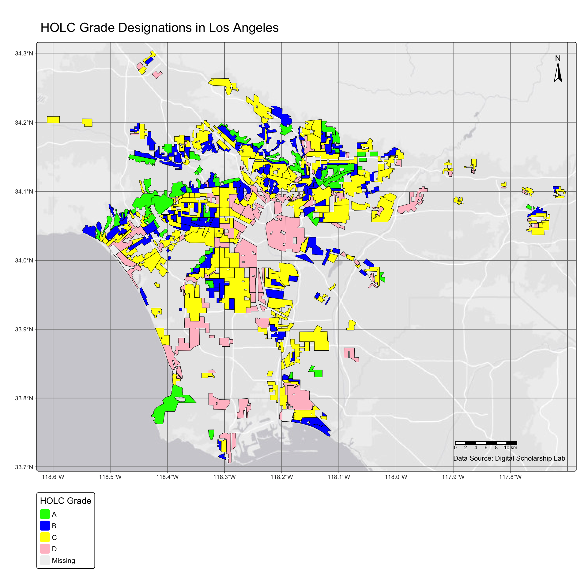

Reading layer `gbif-birds-LA' from data source
`/Users/caitlinnordheim/Desktop/UCSB/Coursework/eds-223/EDS223-HW2/data/gbif-birds-LA/gbif-birds-LA.shp'
using driver `ESRI Shapefile'
Simple feature collection with 1288865 features and 1 field
Geometry type: POINT
Dimension: XY
Bounding box: xmin: -118.6099 ymin: 33.70563 xmax: -117.7028 ymax: 34.30385
Geodetic CRS: WGS 84
# check and make validunique(st_is_valid(bird)) # yay!
[1] TRUE
Part 1: Setup
# check out my holc datacolnames(holc) # column grade
Create a map of historical redlining neighborhoods
m1.1<-tm_shape(holc) +# import holc geo datatm_basemap("Esri.WorldGrayCanvas") +# dull background that still has geo infotm_graticules() +# to get our bearings# fill by HOLC "grade" assignedtm_fill(fill ="grade", # each hold grade a different colorfill.scale =tm_scale(values =# assigning colors manually to match the historical figuresc("green", "blue", "yellow", "pink", "darkgrey")),# this matches historical redlining maps in the metadatafill.legend =tm_legend(title ="HOLC Grade")) +tm_borders(col ="black", lwd =0.5) +# makes it look more refined with borderstm_title("HOLC Grade Designations in Los Angeles") +# add title# add map elementstm_compass(show.labels =1, position =c("right","top")) +# compastm_scalebar(position =c("right", "bottom")) +# scalebartm_credits("Data Source: Digital Scholarship Lab", position =c("right", "bottom")) # data creditsm1.1

Part 1.2
Create a table summarizing:
the percentage of census block groups that fall within each HOLC grade
Also include the percent of census black groups that don’t fall within a HOLC grade
Hint: The HOLC data contains the grades and the EJScreen data contains the census blocks, so you will need to combine the data spatially before doing summary statistics. Once you combine and no longer need the geometries, you can use st_drop_geometry().
# filter ej data to just LA countyej.la <- ej %>%filter(CNTY_NAME =="Los Angeles County")# crs check!!st_crs(ej.la) ==st_crs(holc) # false
[1] FALSE
ej.la <-st_transform(ej.la, crs=st_crs(holc)) # set to same as holcst_crs(ej.la) ==st_crs(holc) # true
[1] TRUE
# JOIN # join x,y adds y columns to xej_holc <-st_join(ej.la, holc) %>%clean_names() %>%# bc the caps are driving me crazyst_drop_geometry()### summary stats# the percentage of "census block groups" that fall within each HOLC grade# percent of census block groups that don’t fall within a HOLC grade# total rows #nrow(ej_holc) # 8988ej_holc %>%group_by(grade) %>%# number in this group/ total rows *100 %#rounded to 2 decimal placessummarise(Percent =round((n() /8988) *100, 2)) %>%mutate(Percent =paste0(Percent, "%")) %>%st_drop_geometry() %>%# pretty tablekbl(booktabs = T, caption ="Census block groups and percent") %>%kable_styling(latex_options ="striped")